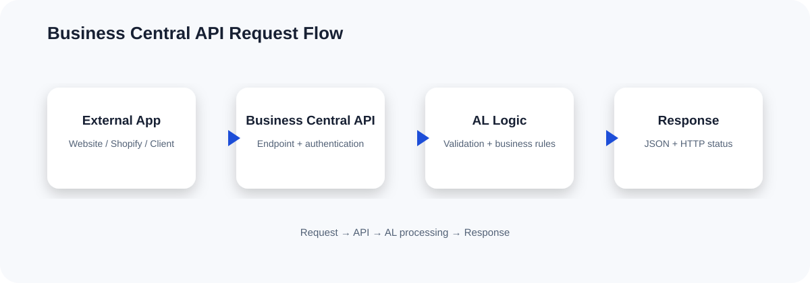
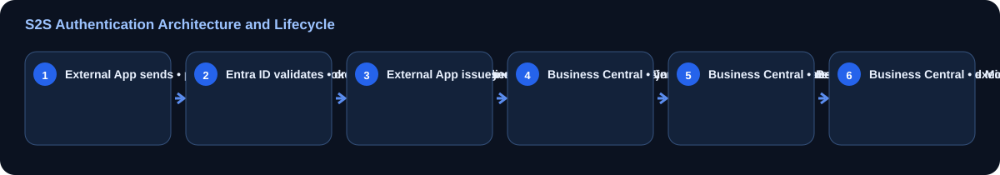

How the API flow works

The Shift to Modern Authentication in Business Central
For years, developers and integrators relied on Web Service Access Keys (Basic Authentication) to connect external applications to Microsoft Dynamics 365 Business Central. While simple to implement, Basic Authentication represents a massive security risk, lacking support for multi-factor authentication, granular scoping, and centralized access controls. Microsoft has deprecated Basic Authentication for Business Central Online, making modern authentication via Microsoft Entra ID (formerly Azure Active Directory) the mandatory standard.
Modern business central api authentication relies on the OAuth 2.0 protocol. For background integration tasks, automated synchronization daemons, and middleware platforms (like Power Automate, Azure Apps, or custom ETL tools), the industry-standard approach is the Service-to-Service (S2S) Client Credentials flow. This tutorial covers the complete lifecycle of setting up Microsoft Entra ID S2S authentication, configuring security permissions inside Business Central, testing your connections, and executing AL OAuth logic directly within your custom AL extensions.
Understanding Service-to-Service (S2S) Architecture

In an S2S scenario, an external application runs in the background without user interaction. To authenticate against the Business Central API, this application interacts directly with the Microsoft Entra ID token endpoint, provides its credentials, and receives a JSON Web Token (JWT). This token is then passed in the Authorization header of every HTTP request sent to Business Central.
This decoupling ensures that human credentials are never hardcoded or shared. Furthermore, permissions are managed globally within your Entra tenant and mapped precisely to an internal "integration user" within Business Central.
Step 1: App Registration in Microsoft Entra ID
To establish an identity for your external application, you must register it within the Microsoft Entra admin center of the tenant hosting your Business Central environment.
- Log in to the Microsoft Entra admin center (formerly Azure Portal) using an account with at least Application Administrator privileges.
- Navigate to Identity > Applications > App registrations and click New registration.
- Enter a descriptive Name (e.g.,
BC-Integration-Service). - Set the Supported account types to Accounts in this organizational directory only (Single tenant).
- Leave the Redirect URI blank, as a background daemon does not require interactive delegation. Click Register.
Configuring API Permissions
Once registered, you must grant the application permission to access Business Central APIs.
- Inside your app registration, select API permissions from the left-hand navigation pane, then click Add a permission.
- Select the Dynamics 365 Business Central API from the list of commonly used Microsoft APIs.
- Choose Application permissions (this designates that the app runs as a background service without a logged-in user).
- Check the box for
API.ReadWrite.All(which permits reading and writing to the API v2.0 endpoint) and click Add permissions. - Crucial Step: An administrator must grant consent. Click the Grant admin consent for [Tenant Name] button and confirm the prompt. The status column must display a green checkmark indicating consent has been granted.
Creating the Client Secret
To authorize requests, your external service needs a secure key (credential) associated with the Client ID.
- Navigate to Certificates & secrets and click New client secret.
- Provide a description and select an expiration period (Microsoft recommends a maximum lifetime of 24 months). Click Add.
- Immediately copy the Secret Value. Once you navigate away from this page, the raw secret value is masked forever. Store this securely in a vault, such as Azure Key Vault.
Step 2: Mapping the Service Principal inside Business Central
Registering the app in Entra ID only establishes its identity globally; Business Central does not yet recognize this application or know what permissions it possesses inside your ERP environments. You must map the Entra App to a special service user within each Business Central environment (Sandbox, Production, etc.).
- Log into your Business Central environment as an administrator.
- Use the global search (Alt+Q) and search for Microsoft Entra Applications (in older versions, this was labeled Azure Active Directory Applications).
- Click New to create a new card.
- In the Client ID field, paste the Application (client) ID from your Microsoft Entra App Registration. Business Central will automatically populate the description if you tab out, or you can manually enter a friendly name.
- Change the State field from Disabled to Enabled.
- Scroll down to the User Permission Sets FastTab. Here, you define exactly what the external service is allowed to do. For safety, assign the minimal required permissions. For general integration read/write access, assign permission sets like
D365 READandD365 COMMON, or assign custom, scope-specific permission sets designed specifically for your integration. Do not useSUPERunless absolutely necessary.
Step 3: Authenticating and Testing the Connection
With both Entra ID and Business Central configured, you can now obtain an access token and execute your first API request. Let's look at a PowerShell script that demonstrates how to acquire a token and call the Standard Business Central API to fetch the list of customers.
# Define authentication parameters
$TenantId = "your-tenant-id-guid"
$ClientId = "your-client-id-guid"
$ClientSecret = "your-client-secret-value"
$Environment = "Production"
$CompanyId = "your-company-id-guid"
# Construct the OAuth 2.0 Token Endpoint
$TokenUrl = "https://login.microsoftonline.com/$TenantId/oauth2/v2.0/token"
# Define token request body
$Body = @{
client_id = $ClientId
scope = "https://api.businesscentral.dynamics.com/.default"
client_secret = $ClientSecret
grant_type = "client_credentials"
}
# Request the token
Write-Host "Requesting OAuth Token..."
$TokenResponse = Invoke-RestMethod -Uri $TokenUrl -Method Post -ContentType "application/x-www-form-urlencoded" -Body $Body
$AccessToken = $TokenResponse.access_token
# Set up headers for Business Central API Call
$Headers = @{
Authorization = "Bearer $AccessToken"
Accept = "application/json"
}
# Call the standard Business Central Customers API
$BCUrl = "https://api.businesscentral.dynamics.com/v2.0/$Environment/api/v2.0/companies($CompanyId)/customers"
Write-Host "Calling Business Central API..."
$Response = Invoke-RestMethod -Uri $BCUrl -Method Get -Headers $Headers
# Output Customer data
$Response.value | Format-Table -Property number, displayName, emailStep 4: Using AL OAuth to Call External APIs from Business Central
While S2S authentication is used by external applications calling *into* Business Central, BC developers frequently need to write code to call *out* to external services requiring OAuth 2.0 authorization. System Application Codeunit 50154 "OAuth2" provides built-in helper methods to acquire access tokens using various grant types, including Client Credentials.
To maintain high standards of security, never hardcode Client IDs or Secrets inside your AL files. Instead, fetch these credentials from isolated storage or encrypted setup tables using the SecretText data type to prevent sensitive values from being dumped to telemetry or debugger variables.
The following AL codeunit shows how to obtain an OAuth access token using the standard system library and perform an HTTP call securely.
codeunit 50120 "DynexalOAuthIntegration"
{
Access = Internal;
procedure GetExternalData(): Text
var
OAuth2: Codeunit "OAuth2";
Client: HttpClient;
Request: HttpRequestMessage;
Response: HttpResponseMessage;
Headers: HttpHeaders;
Scopes: List of [Text];
AccessToken: SecretText;
ClientSecret: SecretText;
ClientId: Text;
AuthURL: Text;
ResultText: Text;
begin
// 1. Initialize variables (In production, load these from an encrypted Setup Table)
ClientId := '11111111-2222-3333-4444-555555555555';
ClientSecret := ConvertToSecretText('SuperSecretKeyFromSecureStorage');
AuthURL := 'https://login.microsoftonline.com/your-tenant-id/oauth2/v2.0/token';
// Define the scope for the target external service
Scopes.Add('https://api.external-service.com/.default');
// 2. Request token using standard AL OAuth codeunit
if not OAuth2.AcquireTokenWithClientCredentials(
ClientId,
ClientSecret,
AuthURL,
'', // Redirect URI is empty for S2S
Scopes,
AccessToken
) then
Error('OAuth token acquisition failed. Check Entra settings.');
// 3. Prepare the HTTP request with Bearer authentication
Request.SetRequestUri('https://api.external-service.com/v1/data');
Request.Method := 'GET';
Request.GetHeaders(Headers);
// Use SecretText in your authorization headers securely
Headers.Add('Authorization', AccessToken);
Headers.Add('Accept', 'application/json');
// 4. Send request and process response
if Client.Send(Request, Response) then begin
if Response.IsSuccessStatusCode() then begin
Response.Content().ReadAs(ResultText);
exit(ResultText);
end else
Error('HTTP Error: %1', Response.HttpStatusCode());
end else
Error('Failed to establish contact with target server.');
end;
local procedure ConvertToSecretText(SecretString: Text): SecretText
var
SecText: SecretText;
begin
SecText := SecretString;
exit(SecText);
end;
}Common Errors and Troubleshooting
Configuring Entra ID integrations involves multiple disconnected portals and systems. If you run into issues, check these common failure patterns:
- 401 Unauthorized (Invalid Credentials): Verify that the Tenant ID, Client ID, and Client Secret in your calling application match the values generated in the Entra ID portal. Ensure you copied the actual client secret Value, not the Secret ID.
- 401 Unauthorized (Empty Roles/Claims): This occurs when the external application retrieves an access token successfully, but Business Central rejects it. Make sure the Client ID is correctly registered in the Business Central "Microsoft Entra Applications" page and the application user is marked as "Enabled".
- 403 Forbidden (Missing Permissions): The token is valid and the user is mapped, but the API cannot be reached. Double-check that you have granted permission sets (e.g.,
D365 READ) to the mapped application user in Business Central and that the Entra Application permissionAPI.ReadWrite.Allhas been granted "Admin Consent". - Invalid Scope Error: When requesting the token from Entra, ensure the
scopeparameter is set explicitly tohttps://api.businesscentral.dynamics.com/.default. For S2S, using any other scopes or specific endpoint paths will cause Entra ID to reject the token request.
Best Practices for Production Integrations
- Principle of Least Privilege: Never grant
SUPERpermissions to an integration principal. Analyze what data the integration writes or reads and design custom AL permission sets targeted specifically to those tables and pages. - Rotate Secrets Regularly: Do not create client secrets that never expire. Set an expiration threshold (e.g., 1 year) and implement a policy to rotate secrets.
- Use Environment Isolation: Use distinct Entra ID Application Registrations for Development, Sandbox, and Production environments. This prevents developers from accidentally triggering processes or writing test payloads to live production environments.
- Handle SecretText Carefully in AL: When building out integration tools inside Business Central, always encapsulate credentials inside the
SecretTexttype. This prevents logs, system messages, and telemetry from exposing keys.
Frequently Asked Questions
Can I use OAuth 2.0 with Business Central on-premises?
Yes, but it requires configuring an identity provider such as Active Directory Federation Services (ADFS) or configuring the on-premises instance to authenticate against Azure AD (Microsoft Entra ID). The setup steps for on-premises require configuring the Business Central Server Instance parameters to accept OAuth keys.
What is the difference between delegated permissions and application permissions in Entra ID?
Delegated permissions are used when a real human user is present. The application acts on behalf of the signed-in user. Application permissions are used for background integrations (S2S) where no user interacts with the app, meaning the integration runs autonomously under its own identity.
How can I verify the content of the JWT token I received?
For debugging purposes, you can copy the raw Base64-encoded access token string received from Microsoft Entra ID and paste it into a secure decoder tool, such as jwt.ms or jwt.io. Here, you can inspect the claims, expiration timestamp, and roles associated with the token to ensure it has the correct resource scope.
Related Dynexal Learning
Explore more practical Business Central and AL development tutorials on the Dynexal Tutorials hub.